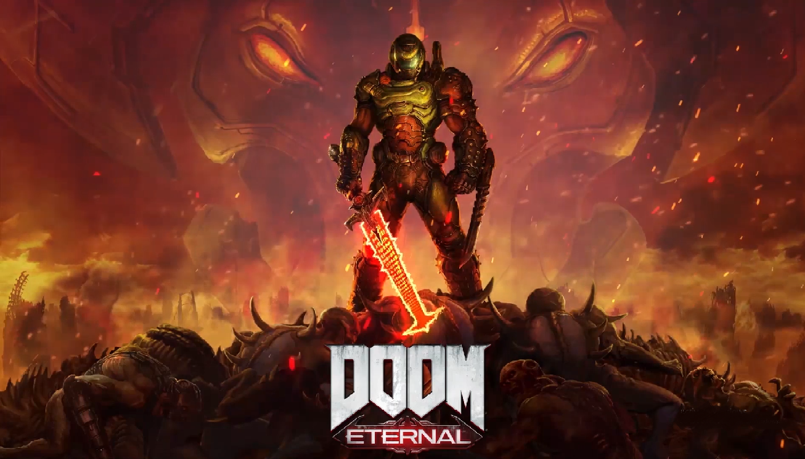

DOOM Eternal es la secuela directa del galardonado Doom (2016) desarrollado por id Software, donde se busca ofrecer la mejor combinación de velocidad y potencia de fuego, dando todo un salto adelante en el mundo del combate en primera persona en avance continuo. En DOOM Eternal el jugador debe tomar el papel del Asesino de la Muerte (DOOM Slayer) y regresar para vengarse de las fuerzas del infierno en una entrega donde hay nuevos demonios y clásicos así como armas y habilidades potentes y novedosas. DOOM Eternal nos lleva a luchar por diferentes dimensiones.
Desarrollador:id Software Editor:Bethesda Softworks Género:Acción, Primera persona (FPS), Shooter (Ciencia ficción, Aliens y Apocalíptico) Lanzamiento:20 de marzo de 2020 Multiplataforma